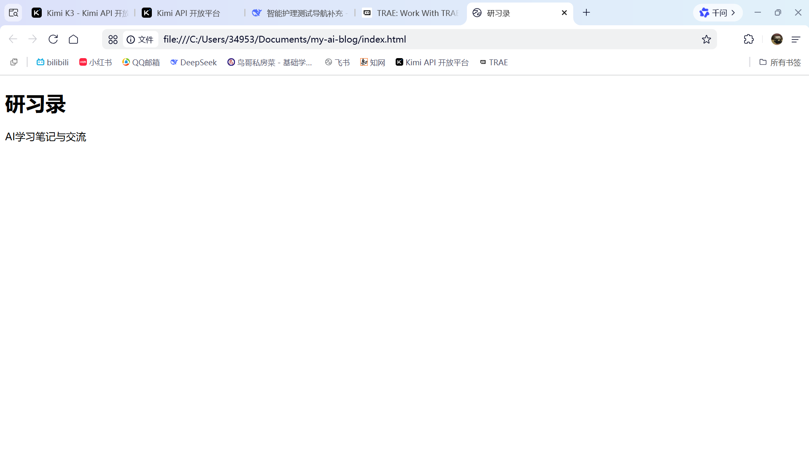
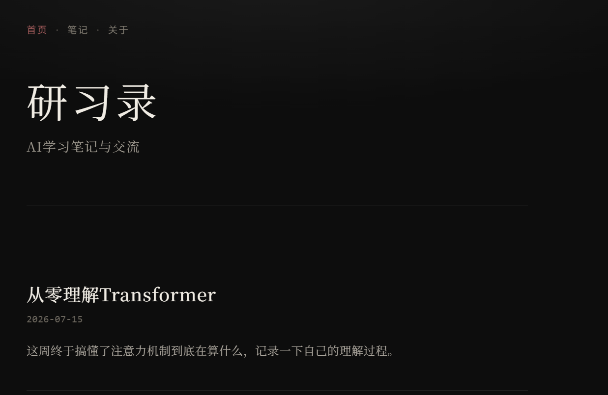
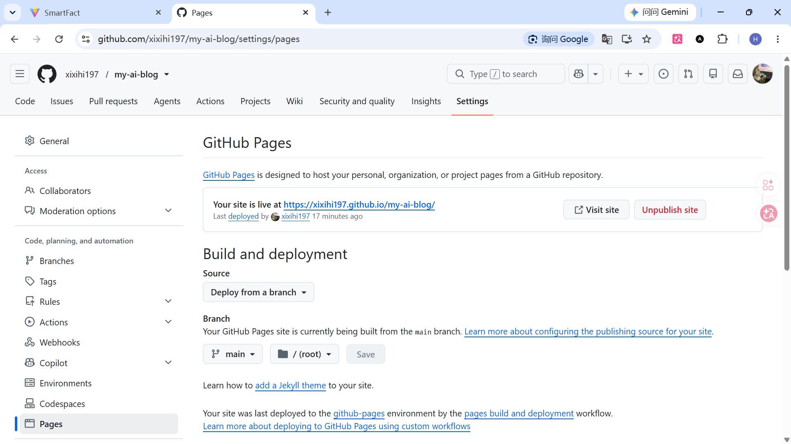
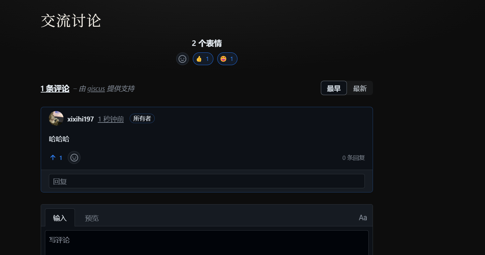
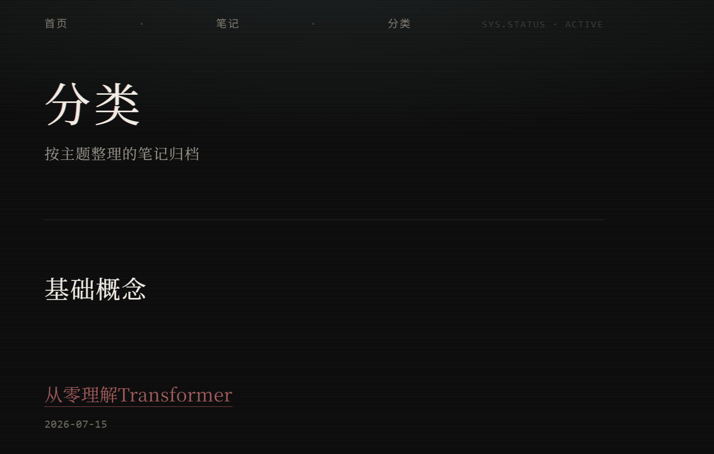

从零搭建研习录网站：完整开发日志
项目记录项目背景
这个网站是为了记录自己学习 AI 的过程，同时替代每周的当面汇报——现在随时可以打开看，看完可以直接在下面留言点评，不用再特意约时间见面汇报。
第一步：搭建开发环境
装了 VS Code（写代码的编辑器）、Git（记录代码修改历史、上传代码）、GitHub 账号（云端托管代码、发布网站）。同时接入了 Claude Code（一个 AI 编程助手），用自然语言描述需求，它生成代码，我来把关确认后再采用。
这一步并不是一帆风顺的，中间遇到了不少网络问题：最开始用官方安装脚本尝试安装 Claude Code 时，连续遇到 TLS 版本不支持、下载文件连接中断（ECONNREFUSED）等网络连接问题，最后改用 npm 的方式，并且配置了 PowerShell 的执行策略之后才安装成功。
接入 AI 模型时（这里用的是 Kimi 的 API），也经历了几次调试：一开始遇到 401 鉴权失败，排查发现是 API Key 设置有误；解决鉴权后又遇到模型名称不存在的问题（最初用的模型名称格式不对），几次调整模型名称后，最终成功用 kimi-k2.7-code 模型跑通。
第二步：确定网站方向与设计语言
跟 AI 助手讨论确定：网站定位是"像博客 + 简单评论区的研习记录"，不做成需要注册账号的复杂论坛（先做简单版）。视觉风格几经讨论，最初想做"黑白 + 文艺复兴雕塑感"，后来进一步明确成"雕塑感与未来科技感结合"的方向，网站取名"研习录"。

第三步：搭建网站基础结构
用 HTML 搭建了首页、笔记详情页的骨架结构，再用 CSS 做整体视觉设计：深色背景、衬线字体标题、暗红色点缀色、极细分隔线。这个过程是先做好骨架结构，确认内容逻辑没问题后，再叠加视觉样式，这样每一步改动都更容易排查问题。

第四步：发布上线
用 Git 命令（git init、git add、git commit）把代码存档，再推送（git push）到 GitHub 上新建的仓库，之后在仓库设置里开启 GitHub Pages 服务，获得了一个正式的公开网址：https://xixihi197.github.io/my-ai-blog/。这一步之后，网站第一次真正能被互联网上的任何人访问到。

第五步：加入评论互动功能
为了让老师能直接在笔记下留言，接入了 Giscus 评论插件，它借助 GitHub 的 Discussions 功能来存储评论内容，访客用 GitHub 账号登录后就能直接留言，不需要额外注册系统。
这一步也踩了一个坑：最初在本地预览时，评论区一直显示"giscus.app 拒绝了我们的连接请求"。后来搞清楚原因：Giscus 出于安全考虑，只认可通过真实 https 网址访问的请求，本地文件路径（file:/// 开头）会被直接拒绝。所以每次要测试评论功能，都必须先推送到 GitHub、通过正式网址访问才能看到效果，本地预览只能看页面结构和样式，看不到评论区实际效果。

第六步：功能完善——笔记分类
新增了笔记分类功能，每篇笔记贴上分类标签（比如"基础概念""实战技巧""环境搭建"），首页列表和笔记详情页都会显示对应标签，同时新建了一个专门的分类归档页面，方便按主题查看。顺带把原本计划做的"关于"页面砍掉了，改成更实用的分类功能，并且精简了导航栏结构。

目前进展与下一步计划
目前网站已经有一个可以正常访问、带评论互动、带分类归档的基础版本。接下来计划：把示例内容替换成真实的学习笔记；同时也在考虑是否要升级成"多人可发帖"的内部交流平台（这会涉及账号系统、数据库等更复杂的技术，属于后续更大的开发工作，目前正在评估中）。
交流讨论